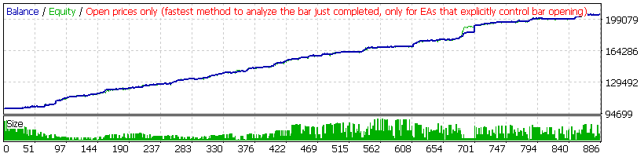

<a href="StrategyTester_US500.htm"> US500(US SPX 500 Index) </a><br>
<br>
<a href="StrategyTester_EURUSD.htm"> EUR/USD(Euro vs US Dollar) </a><br>
<br>
<a href="StrategyTester_BTCUSD.html"> BTC/USD </a><br>
<br>
<a href="StrategyTester_JP225.htm"> JP225(Nikkie 225 Index) </a><br>
<br>
<a href="StrategyTester_HK50.htm"> HK50(Hong Kong 50 Index) </a><br>
<br>
<a href="StrategyTester_AUS200.htm"> AUS200(Australia 200 Index) </a><br>
<br>


<a href="https://aizwellenstan.github.io/screener.html">Screener</a>
<br>
<a href="https://aizwellenstan.github.io/unity.html">UnityProj</a>